Every family of instruments
Four real pianos first, then a pad controller and a drum kit, the guitars and the bass guitar; after them organs, mallets, the harp, bowed strings, woodwinds and brass, up to a whole band, one family at a time.
v0.13.0 is done · v0.14.0 is next
Chords, a melody, a bassline and a countermelody, written in any style, shown as sheet music and played by realistic hands on realistic instruments, from the piano and the guitar to a whole band. With music lessons that teach you to play, write and arrange it yourself. Offline and 100% AI-free.
Freally Handscore is free today, but it might not be free forever: future versions may be sold.
There are no downloads yet, and the source code is private.
Most people who use a chord generator never see how its parts would be played, and most people learning an instrument never see a player's hands up close. Handscore shows you both.
Pick a genre, an artist or a producer and Handscore writes four parts in that style: chords, a melody, a bassline and a countermelody. They appear as sheets of music on the instrument's stand, and realistic hands play them the way a player of that instrument would: every finger on the key a pianist would use, every fret and strum a guitarist would. The pianos come first, then the guitars and the bass guitar, and after them every family of instruments, up to a whole band.
Every note is shown where it is played, each piano key named on its front, so you can see exactly what is sounding. When a part is right, drag it from its sheet straight onto a track in your DAW.
And it teaches. The lessons begin on Day 1 at the piano, listen as you play and move on when you have it right, then go on to reading music, rhythm, ear training, theory, songwriting and lyrics, song arrangement, mixing, finger drumming, the drum kit, the guitar and the classical guitar.

Four real pianos first, then a pad controller and a drum kit, the guitars and the bass guitar; after them organs, mallets, the harp, bowed strings, woodwinds and brass, up to a whole band, one family at a time.

Two hands that play every note the way a player of that instrument would: the finger a pianist would choose, the fret and the stroke a guitarist would use.

Courses from your first notes at the piano and the guitar to reading music, rhythm, ear training, theory, songwriting and lyrics, song arrangement and mixing. They listen as you play, and read each lesson to you when you switch Read Aloud on.

A drum machine with your own samples on its pads and a step sequencer, a pad controller whose pads light up with every hit, and a drum kit played by a drummer's hands and feet, with courses in finger drumming and the drum kit.

Chords, melody, countermelody and bass, each on its own sheet, with every note lit as it plays.

73 genres, 1,507 artists and 833 producers, from the same rule-based generators.

One part at a time or all four together, dragged from the sheets straight into your DAW, or saved as a MIDI file or as a PDF of the sheets.

Switch between them while the music plays; the sheets turn to stay readable and the hands never miss a note.

CLAP, VST3 and AU, plus a standalone app. Windows, macOS and Linux.

No account, no telemetry, no network, no model. Every part, fingering and movement comes from rules, enforced by a build gate rather than promised.
One line per version. The lessons, finger drumming, the drum machine and the drum kit, the guitars and the bass guitar come before 1.0. After it, each version brings a new family of instruments, played by realistic hands the way a teacher would show you.
v0.1.0DoneThe foundation: the plugin loads as CLAP, VST3 and AU and as a standalone app, asks you to accept its licence, and opens on an 88-key keyboard with every key named.v0.2.0DoneThe real pianos: Grand, Acoustic, Upright and Honky-Tonk, their keys moving and sounding as they play.v0.3.0DoneRealistic hands at the keyboard, fingering every note the way a pianist would, with sixty-two public-domain classics to learn and a transport to scrub through them.v0.4.0DoneGenerate in any style, read the four sheets as they light up, and drag the MIDI into your DAW.v0.5.0DoneThe overhead and side views, with the sheets lying flat on the piano, and a seamless switch between views.v0.6.0DoneLessons from Day 1: a piano course that listens to you play and moves on when you have it right, and a Read Aloud switch that reads each lesson to you, each word lit as it is spoken.v0.7.0DoneA mixer for every part, with faders, pan, EQ, effects and compression, and drags that keep the mix.v0.8.0DoneThe Song view: build a whole song from sections by hand, or start from an artist's or a genre's arrangement, then watch it played and drag it out.v0.9.0DoneMore courses: reading sheet music, rhythm, ear training, music theory with the Nashville Number System, songwriting and lyrics, arranging, and mixing.v0.10.0DoneFinger drumming on a pad controller whose pads light up with every hit, from the first beat to full grooves.v0.11.0DoneA drum kit set up and played the way a professional drummer would, and a drum machine beside it, with one switch to choose which plays your drums.v0.12.0DoneLive listening: play a real instrument or sing into a microphone or an instrument cable, and the lessons hear it, with a tuner and latency calibration.v0.13.0DoneThe guitars: steel-string, nylon, electric and muted, fretted, picked and strummed by a guitarist's hands, with TAB on the sheets and two guitar courses.v0.14.0PlannedThe bass guitar, played with the fingers and slapped.v0.15.0PlannedYour own audio and MIDI, read into parts and played by the hands.v0.16.0PlannedThe classics: public-domain tunes to watch and listen to.v0.17.0PlannedThe realism pass: lighting, materials and motion held to filmed playing.v0.18.0PlannedThe finish: settings, eighteen languages throughout, accessibility and the manual.v1.0.0-beta.1PlannedUpdate notices and the trial and paid editions.v1.0.0The goalThe first public release.v1.1.0LaterElectric pianos and organs, the organs with a pedalboard for the bassline.v1.2.0LaterHarpsichord, clavinet, celesta and toy piano; ukulele, banjo and mandolin.v1.3.0LaterThe mallets: xylophone, marimba, vibraphone and glockenspiel.v1.4.0LaterThe harp, koto, sitar and mountain dulcimer.v1.5.0LaterViolin, viola, cello and double bass, bowed and plucked.v1.6.0LaterFlute, clarinet, saxophones, oboe and recorder.v1.7.0LaterTrumpet, trombone, French horn and tuba.v1.8.0LaterPlay along and learn mode.v2.0.0LaterThe band: every part on its own instrument, each with its own player.A version that is done is built and tagged. It is not a download: there are none before 1.0.0.
Version 0.13.0 loads in a DAW and opens on four real pianos played by realistic hands, seen from the front, from overhead or from the side, the camera gliding between them while the music plays. Four guitars — steel-string, nylon, electric and muted — can take the stage instead, a guitarist's hands fretting, picking and strumming the part you choose, with TAB and chord diagrams on its sheet. Search a genre, an artist or a producer, press Generate, and four parts are written in that style, printed as sheet music on the piano's desk and played by the hands, ready to drag into your DAW as MIDI or audio, edit note by note or export as MIDI or a PDF. Each part plays through its own channel strip in a mixer, with an envelope editor to shape it, and can play on one of your own instruments. The Song view builds whole songs section by section, with a hit-readiness grade and a songwriter's tools. Sixty-two public-domain classics are there to learn, with a transport to pause, rewind and scrub, and lesson mode teaches fourteen courses — the piano to about Grade 5, reading, rhythm, ear training, theory, songwriting, lyrics, rap, arrangement, mixing, finger drumming, the drum kit, the guitar and the classical guitar — listening as you play, on MIDI or, with Listen on, to a real instrument or your voice through a microphone or a cable. The drums play on a drum machine with your own samples on its pads and a step sequencer, or on a drum kit, one switch between them. A pad controller or the kit can take the stage instead, the hands and the drummer playing the loop's drums, and you can play your own drums in, layer on layer. Every other instrument and more courses arrive version by version, as the ladder above shows.
No beta on this page, no preview build and no early access.
The plugin and the standalone app contain no networking code, and a build gate fails if any is added. An instrument of your own that you load into a part is yours: it runs in a process of its own and does whatever it always does. A later version may add an update check that stays off unless you switch it on, run by a separate program.
The changelog lists everything that changed in Freally Handscore, version by version, in all eighteen languages.